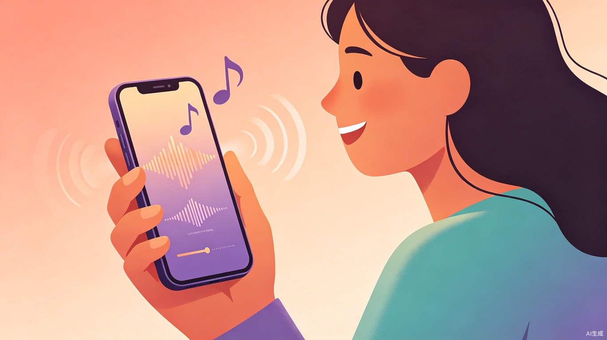

中国在线音乐教育市场规模持续增长，成人声乐学习需求旺盛。然而，现有产品几乎全部聚焦于"娱乐化唱歌"（K歌、社交合唱），而非"治愈化练歌"（系统矫正音准）。全民K歌、唱吧等平台的核心功能是"唱+评+社交"，评分系统本质是波形匹配而非教学逻辑，且内置修音功能会掩盖用户真实问题，导致用户误以为自己进步了。
线下声乐课价格昂贵（200-500元/节），时间固定，老师水平参差不齐；线上课程多为录播，缺乏即时反馈。79%的零基础用户自学1年以上仍无明显提升[1]。与此同时，大量"五音不全"用户真正需要的不是"唱得像歌手"，而是"KTV敢开口、有几首拿得出手的歌"——这个需求几乎无人服务。
音高检测（Pitch Detection）技术已高度成熟。传统算法（YIN/pYIN）在干净人声条件下准确率可达90%+，深度学习方法（CREPE/SwiftF0）超过95%[2]。最新模型 SwiftF0（2025）仅9.5万参数，比CREPE快42倍，可在浏览器端实时运行[3]。技术不再是瓶颈，产品化时机已到。
五音不全的本质是"听觉-发声"神经通路未建立，大脑无法准确判断自己发出的音高与目标音高的偏差。这不是先天缺陷，90%以上的情况可以通过训练改善。但用户面临一个死循环：听不出→不知道怎么改→越练越错→放弃。
KTV不敢开口、话筒递过来往后躲、被嘲笑后形成创伤性回避
看了大量教程，该跑调还是跑调，79%自学1年+无进步
线下课太贵（200-500元/节），线上课无反馈，错误固化
练了一个月感觉没变化，缺乏可视化证据维持动力
海量碎片化教程，不知道第一步该练什么，怕走弯路
K歌App修音掩盖问题，评分黑箱不解释原因，"假进步陷阱"
| 现有产品 | 核心问题 | 我们的机会 |
|---|---|---|
| 全民K歌/唱吧 | 只打分不解释原因；修音掩盖问题；追求"像原唱"排斥个人风格 | 提供"为什么跑调+怎么改"的可操作反馈 |
| AI声乐教练App (Yousician/Vanido) |
仅实时音高检测，缺乏"为什么跑调"的深度分析；多仅支持iOS | AI诊断报告+针对性训练，覆盖微信生态 |
| 线下声乐课 | 价格高、时间固定、老师水平参差不齐、课后无指导 | 低成本、随时练、标准化AI反馈 |
| B站/抖音教程 | 碎片化、无反馈、无法判断自己练得对不对 | 结构化课程+实时AI纠错 |
形态：微信小程序（MVP），纯软件，无需额外硬件。
核心能力：AI音准诊断 + 实时音高可视化 + 针对性矫正训练。
差异化：不修音、不娱乐化，专注"矫正训练"这一空白赛道。
典型画像：小美，25岁，互联网运营。每次团建去KTV都坐在角落刷手机。高中时被嘲笑"跑调王"，从此不敢开口。试过全民K歌但分数低也不知道怎么改，慢慢就不用了。她需要的不是"成为歌手"，而是"KTV能开口唱一首不丢人的歌"。
典型画像：阿强，30岁，程序员。喜欢唱歌，B站看了很多教学视频跟练半年但进步为零。想知道自己练得对不对，需要即时反馈和系统化训练路径。
朋友约了周末KTV，提前3天打开小程序选一首歌，针对性练习跑调段落，确保聚会时不丢人
通勤路上、午休时间，打开小程序做5分钟"单音跟唱小游戏"，逐步建立音高感知
公司年会要求表演节目，用小程序系统训练一首歌，从音准到节奏全面提升
| 价值维度 | 具体价值 |
|---|---|
| 功能价值 | 让用户"看见"自己的音高偏差，AI精确指出哪里跑调、偏了多少、为什么跑调 |
| 心理价值 | 提供私密、无评判的练习空间，消除"被嘲笑"的恐惧；正向反馈重建自信 |
| 效率价值 | 替代200-500元/节的线下课，随时随地练习，成本趋近于零 |
| 社交价值 | 从"KTV边缘人"变成"能唱几首歌的人"，融入社交场景 |
用户唱完一首歌后，AI生成详细诊断报告，包含：
用户跟唱时，屏幕实时显示两条曲线：
用户可以直观"看见"自己的音高与目标的差距，建立音高感知。
基于诊断报告，自动将跑调段落拆解为训练任务：
| 环节 | 技术方案 | 说明 |
|---|---|---|
| 音频采集 | wx.getRecorderManager / getUserMedia | 微信小程序录音API，采集PCM数据 |
| 实时音高检测 | YIN/自相关算法 (WASM) | 延迟<10ms，精度±2-5 cents，满足实时可视化 |
| 唱后AI评分 | SwiftF0 / FCPE 轻量模型 | 精度±1-5 cents，可浏览器端运行或云端推理 |
| 音准对比 | DTW匹配 + cent偏差统计 | 用户F0与参考旋律线对齐，计算逐帧偏差 |
| 参考旋律提取 | 预置MIDI / 原唱F0提取 | 歌曲库预处理好标准音高线 |
| 可视化 | Canvas 实时绘制 | 音高曲线、评分仪表盘 |
| 难点 | 风险 | 应对方案 |
|---|---|---|
| 伴奏干扰 | 用户跟着伴奏唱时，F0检测被伴奏严重干扰 | MVP阶段：提供纯伴奏（已分离人声的伴奏音轨）；进阶：集成轻量音源分离 |
| 手机麦克风噪声 | 环境噪声导致检测不准 | 噪声门 + 简单谱减法预处理 |
| 倍频错误 | 算法可能把高音误判为低八度 | 后处理：相邻帧平滑 + 音域约束 |
| 微信小程序限制 | 无完整Web Audio API，性能受限 | 实时用WASM自相关，评分用云端模型 |
以下是对本创意方案中逻辑最脆弱、最可能被质疑的三个环节的深度剖析，以及对应的加固或替代方案。
问题本质：音高检测（判断"偏了多少"）是成熟技术，但归因分析（判断"为什么偏"）完全是另一回事。用户唱低了一个音，可能是因为气息不足、喉位偏高、音高记忆偏差、紧张导致声带痉挛、甚至只是耳机延迟导致的自我反馈错误——仅凭F0曲线很难区分这些原因。
逻辑脆弱之处：我们的方案承诺AI会告诉用户"为什么跑调"，但MVP阶段的技术能力只能做到"哪里跑调"，做不到可靠的"为什么跑调"。如果AI给出的归因经常不准确，用户会迅速失去信任。
问题本质：本方案的核心假设是——如果用户能"看见"自己的音高偏差，就能逐步纠正。但五音不全的本质是"听觉-发声"神经通路未建立，也就是大脑本身就不具备准确判断音高的能力。让一个"听不准"的人去看一条曲线，他可能看懂了曲线但依然唱不准——因为问题出在神经通路，不在认知层面。
逻辑脆弱之处：可视化对"有音准意识但控制力不足"的用户有效（B类用户），但对"连音高差别都感知不到"的深度五音不全用户（A类核心用户），可能收效甚微。类比：让色盲看颜色标注的地图，标注再清晰他也分辨不出。
问题本质：本方案选择微信小程序作为MVP形态，核心原因是"零门槛"。但微信小程序存在明确的音频处理限制：无完整Web Audio API、AudioWorklet不支持、性能和内存受限。实时音高检测需要连续的音频流处理，这些限制可能导致延迟过高或频繁卡顿。
逻辑脆弱之处：如果实时可视化在小程序上体验很差（延迟高、卡顿、曲线不流畅），产品的核心卖点就立不住了。而如果为了解决性能问题把所有处理搬到云端，又会引入网络延迟，同样破坏实时体验。
| 模块 | 可行性 | 实现难度 | 说明 |
|---|---|---|---|
| 音高检测算法 | 高 | 开源算法成熟（YIN/CREPE/SwiftF0），有大量参考实现，WASM编译方案已被验证 | |
| 实时音高可视化 | 高 | Canvas绘制曲线是前端基础能力，实时更新无技术障碍 | |
| 音准评分算法 | 高 | DTW匹配+cent偏差统计是成熟方案，全民K歌等已验证 | |
| AI诊断报告（表层模式分类） | 中高 | 基于F0统计特征的规则分类可实现，但需要调优阈值和文案 | |
| AI诊断报告（深层归因） | 低 | 需要声学特征分析+声乐知识库，MVP不建议做 | |
| 针对性矫正训练 | 高 | 单音跟唱+短句循环本质是"播放目标音→检测用户音→判断匹配"，技术简单 | |
| 歌曲库与参考旋律 | 中 | 需要版权歌曲的伴奏/MIDI；MVP可先用免费版权歌曲或用户上传 | |
| 小程序音频处理 | 中 | 实时检测受限，建议混合架构（端侧轻量+云端深度）或改用H5 | |
| 社交分享与裂变 | 高 | 微信生态内分享海报是成熟玩法，开发量小 | |
| 用户留存与商业化 | 低 | 唱歌训练是低频需求，留存是最大挑战，需靠内容+社交+游戏化解决 |
难点：音准对比需要每首歌的"标准音高线"（MIDI或原唱F0提取），这涉及歌曲版权。正版授权成本高，且处理每首歌的旋律提取需要人工+算法配合。
替代方案：
难点：准确判断"为什么跑调"（气息/喉位/声带状态）需要多维度声学特征分析+专业声乐知识库，远超MVP能力范围。
替代方案：
难点：唱歌训练是低频需求（不像健身需要每天练），在线音乐教育行业30日留存率仅15%[4]。用户"练了几次觉得没进步"就会流失。
替代方案：
| 维度 | 全民K歌/唱吧 | AI声乐教练App | 线下声乐课 | 我们的方案 |
|---|---|---|---|---|
| 核心定位 | 娱乐K歌 | 声乐练习 | 专业教学 | 音准矫正 |
| 音准反馈 | 评分黑箱 | 实时音高指示 | 老师口头反馈 | AI诊断报告+可视化 |
| 改进指导 | 无 | 有限 | 依赖老师水平 | AI模式分类+训练建议 |
| 使用门槛 | 低 | 中（需下载App） | 高（价格+时间） | 极低（小程序） |
| 修音 | 有（掩盖问题） | 无 | N/A | 无（真实反馈） |
| 价格 | 免费+会员 | 订阅制 | 200-500元/节 | 免费（MVP） |
三个关键建议：